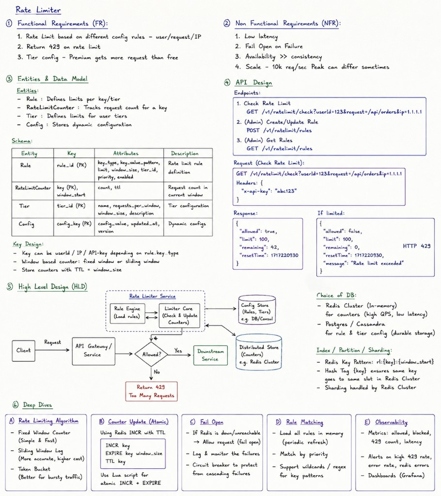
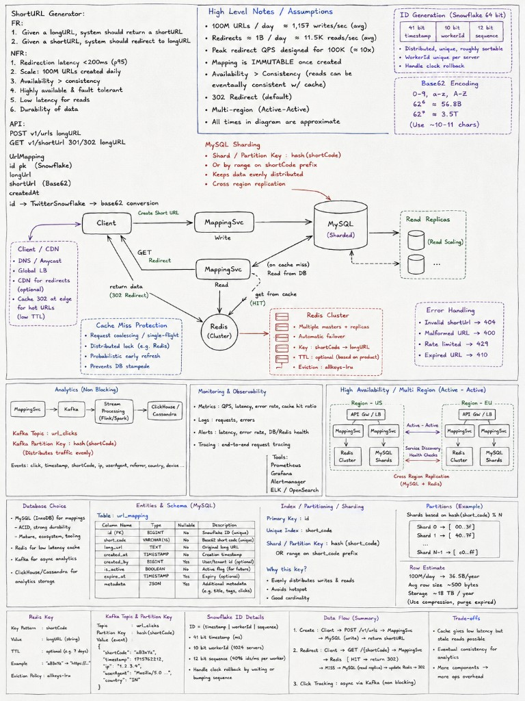
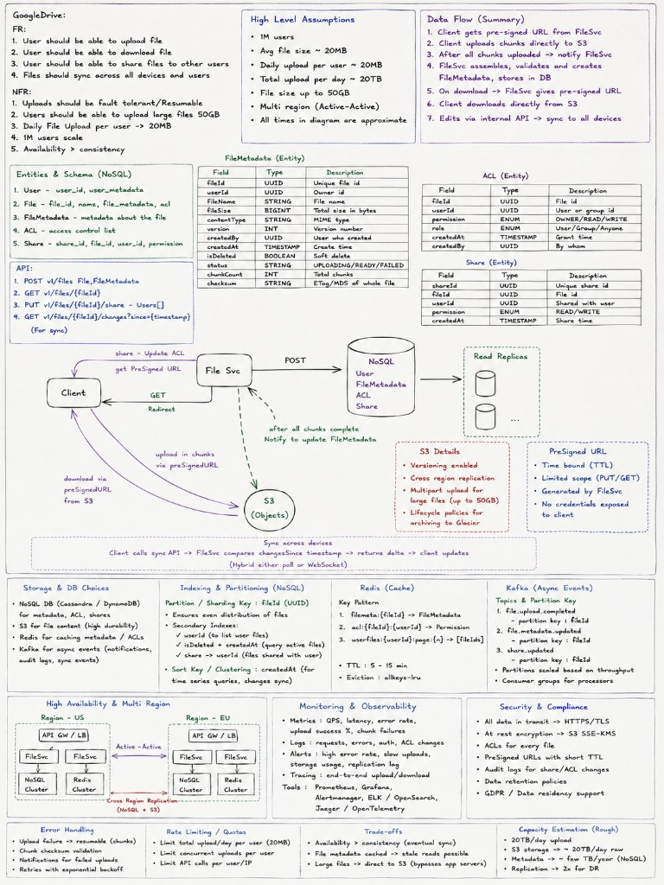
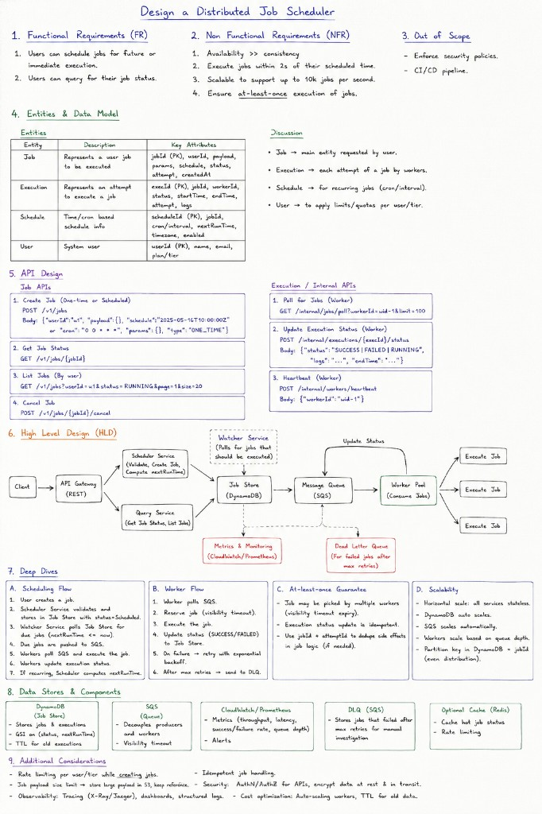
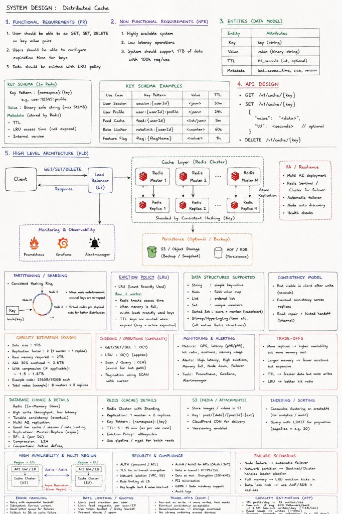
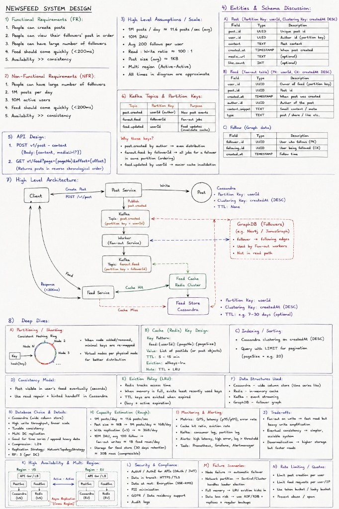

Start with Functional Requirements, then Non-Functional Requirements, lock Entities / schema, define the API, draw and walk the HLD, then Deep Dive on bottlenecks, failure modes, and trade-offs. Do not jump to boxes before FR/NFR are agreed.
- Are we limiting per user ID, IP, or API key? Each has different tradeoffs.
- Is this server-side middleware at the API Gateway level, or per-microservice?
- What's the scale — DAU, peak RPS?
- Do different users have different limits — free vs paid tiers?
- What should we return when the limit is hit — 429? Any specific headers?
- Do we need burst support — allow short spikes above the limit?
- Limit N requests per minute per userId — configurable per tier
- HTTP 429 on breach with headers:
X-RateLimit-Limit,X-RateLimit-Remaining,X-RateLimit-Reset,Retry-After - Burst support for paid users
- Allowlist for internal services
- Latency: <5ms added to every request — this is in the hot path
- Availability: if the limiter is down, fail open — never block production traffic because the limiter failed
- Consistency: eventual is fine — small over-allowance at window boundaries is acceptable
- Scale: 10M users, 1.5M req/sec — needs very fast shared state
isAllowed(userId, endpoint) → {allowed: bool, remaining: int, resetAt: epoch}- On
allowed=false: gateway returns 429, sets response headers, does NOT forward request - On
allowed=true: gateway forwards, decrements counter in background
PUT /rl/rules/{tier} → {limit, windowSec, burstCapacity}- Changes propagate to all gateway nodes within 30 seconds
- Key:
userId, Value:{count, windowStart} - On each request: if
now - windowStart > 60s, reset. Ifcount < limit, increment and allow. Else 429. - O(1) lookup, zero network calls, sub-millisecond.
INCR returns the new value atomically, no compare-and-swap needed. Sub-millisecond latency. Supports TTL natively. ~200K ops/sec on a single node.
- Fixed Window Counter — simplest, but has a boundary burst problem
- Sliding Window Log — exact, but memory heavy
- Sliding Window Counter — good balance, my default choice
- Token Bucket — best for burst support which paid users need
- Key:
rl:swc:{userId}:{floor(epoch_ms / 10000)} - Example:
rl:swc:u9182:171724322 - Type: String (integer counter)
- Commands:
INCR keyon each request,EXPIRE key 120(keep 2 windows) - Read:
MGETof 6 consecutive bucket keys, sum them - TTL: 120s — two full windows so we don't lose data at window edge
- Key:
rl:tb:{userId} - Type: Hash with fields
t(float tokens remaining) andr(last refill epoch ms) - Must use a Lua script for atomicity — HMGET + compute + HMSET is not atomic otherwise
-- KEYS[1]="rl:tb:{userId}"
-- ARGV: capacity, rate(tokens/sec), now_ms, cost
local data = redis.call('HMGET', KEYS[1], 't', 'r')
local tokens = tonumber(data[1]) or tonumber(ARGV[1])
local last = tonumber(data[2]) or tonumber(ARGV[3])
local elapsed = (tonumber(ARGV[3]) - last) / 1000.0
tokens = math.min(tonumber(ARGV[1]), tokens + elapsed * tonumber(ARGV[2]))
if tokens < tonumber(ARGV[4]) then
return {0, math.ceil((tonumber(ARGV[4])-tokens)/tonumber(ARGV[2])*1000)}
end
tokens = tokens - tonumber(ARGV[4])
redis.call('HMSET', KEYS[1], 't', tokens, 'r', ARGV[3])
redis.call('EXPIRE', KEYS[1], 3600)
return {1, 0} -- {allowed, retry_after_ms}
SCRIPT LOAD and call via EVALSHA for zero parsing overhead per call.
- Redis Cluster — shard by userId. Consistent hash on userId means all
rl:{userId}:*keys for one user land on the same shard. No cross-shard ops needed per request. - L1 in-process cache — Caffeine LRU cache on each API server, keyed by userId, TTL 100ms. On cache hit: no Redis call at all. At ~80% hit rate this cuts Redis ops from 1.5M/sec to ~300K/sec across the fleet.
rate_limiter.degraded_mode=true metric and alert on-call. This is a deliberate tradeoff — a rate limiter outage must not become a service outage.
-- Small table, strong consistency, admin writes CREATE TABLE rl_rules ( tier VARCHAR(20) NOT NULL, endpoint VARCHAR(255) NOT NULL DEFAULT '*', limit_n INT NOT NULL, window_sec INT NOT NULL DEFAULT 60, burst INT, -- NULL = no burst (free tier) PRIMARY KEY (tier, endpoint) ); -- Example rows: -- ('free', '*', 60, 60, NULL) -- ('paid', '*', 1000, 60, 2000) -- ('paid', '/search', 200, 60, 400)
rl:config:updated. All API servers subscribed to that channel invalidate their cache immediately. Changes propagate in <1s in practice.

- CDN / WAF — IP-level DDoS protection, bot fingerprinting, country blocks. Before requests hit our servers.
- API Gateway (Rate Limiter Middleware) — on every request: (1) extract userId from JWT, (2) check L1 Caffeine cache (100ms TTL), (3) on miss: MGET 6 bucket keys from Redis shard (or EVALSHA for token bucket), (4) if exceeded: 429, else forward.
- Redis Cluster — 20 shards, consistent hash on userId. Each shard: primary + replica. Sentinel for failover.
- Config Service — PostgreSQL backed. Rules cached in-process (30s TTL) + Redis Pub/Sub invalidation.
- Fail-open — Redis unavailable → L1 only → degraded_mode metric → alert.
- Observability — counter metric for every 429 with labels
(userId_tier, endpoint). Alert if exceeded rate spikes suddenly (indicates bot attack). - Dynamic denylist — for known-bad IPs or users, bypass rate limiting and always return 403. Separate Redis Set
rl:denylistchecked first. - Allowlist for internal services — Redis Set
rl:allowlistwith internal serviceIds. SISMEMBER before any counter check. - Rate limit by composite key —
(userId, endpoint)for per-route limits. Paid users might have 1000/min overall but only 200/min for the expensive/searchendpoint.
- Sliding Counter:
rl:swc:{uid}:{bucket}→ String, 6 buckets of 10s, TTL 120s - Token Bucket:
rl:tb:{uid}→ Hash {t, r}, TTL 3600s, Lua EVALSHA - Tier cache:
user:tier:{uid}→ String, TTL 300s - Allowlist:
rl:allowlist→ Set, no TTL
- rl_rules: PK (tier, endpoint) → {limit_n, window_sec, burst}
- Written by admins only. Strong consistency needed.
- Cached in-proc 30s + Pub/Sub invalidation
- Redis is cache; Postgres is source of truth
- Shard Redis by userId → all keys on same shard
- Lua script → atomic token bucket read-modify-write
- L1 Caffeine 100ms → cuts Redis ops by 80%
- Fail-open → never block prod for limiter failure
- EVALSHA → zero Lua parsing overhead per call
Start with Functional Requirements, then Non-Functional Requirements, lock Entities / schema, define the API, draw and walk the HLD, then Deep Dive on bottlenecks, failure modes, and trade-offs. Do not jump to boxes before FR/NFR are agreed.
node = hash(key) % N. When N changes from 10 to 11, the formula changes for nearly every key. Specifically ~(N-1)/N ≈ 91% of all keys remap to a different node simultaneously. The entire cache goes cold at once. We need consistent hashing."ServerA-0", "ServerA-1", ..., "ServerA-149" — each lands at a different ring position. The physical server owns whichever real keys fall in any of its 150 arcs. Now load is near-uniform because each server has many small scattered arcs. When a server fails, its 150 arcs each shift to a different successor — load spreads across all peers, not one.TreeMap<Long, ServerNode> — keys are ring positions (uint64 hash), values are server references. The map is kept sorted. Lookup is: ring.ceilingEntry(hash(key)) — returns the smallest position ≥ hash. If null (hash is past the last entry): ring.firstEntry() to wrap around. That's the owning server. O(log N) where N = total vnode count. With 3 servers × 150 vnodes = 450 entries → log₂(450) ≈ 9 comparisons. Negligible.// Add a server (150 vnodes) for (int i = 0; i < NUM_VNODES; i++) { long pos = hash(server.id + "-" + i); ring.put(pos, server); } // Remove a server for (int i = 0; i < NUM_VNODES; i++) { ring.remove(hash(server.id + "-" + i)); } // Lookup: which server owns key K? long pos = hash(key); Map.Entry<Long, Server> e = ring.ceilingEntry(pos); Server owner = (e != null) ? e.getValue() : ring.firstEntry().getValue();
- Cassandra — token ring, 256 vnodes per node by default. Each node owns a token range.
- DynamoDB — preference list with N=3, hinted handoff, always-writable.
- Redis Cluster — 16,384 fixed hash slots (conceptually the same thing with a fixed ring size). Each node owns a range of slots.
- Memcached — client-side ketama library implements consistent hashing with 160 vnodes/server.
- Ring: 0 to 2³² positions
- Hash server + key → ring position
- Owner: first server clockwise
- Add/remove: ~1/N keys move
- 150–256 vnodes per physical server
- TreeMap<Long,Server> sorted by position
- Lookup: ceilingEntry(hash(key)) O(log N)
- Wrap-around: firstEntry() if null
- 3 servers × 150 = 450 entries → ~9 comparisons
- Hash fn: MD5/SHA1 → uint64
- Preference list: next N-1 distinct servers
- N=3, W=2, R=2 → W+R>N = strong consistency
- Sloppy quorum: always writable
- Hinted handoff on node recovery
- LWW or vector clocks for conflict resolution
Start with Functional Requirements, then Non-Functional Requirements, lock Entities / schema, define the API, draw and walk the HLD, then Deep Dive on bottlenecks, failure modes, and trade-offs. Do not jump to boxes before FR/NFR are agreed.
Given your answers (10TB, 100K writes/sec, 500K reads/sec, eventual OK, values <10KB, TTL yes):
- FR: get(key), put(key, value), delete(key), TTL per key, configurable consistency
- NFR: 10TB data, 100K writes/sec, 500K reads/sec, <10ms p99 read, tunable consistency (W+R vs N), horizontal scale, no single point of failure
- Step 1 — WAL: Append the write to the Write-Ahead Log — a sequential, append-only file on disk. This is for crash recovery. If the server dies right after this, the WAL can be replayed on restart.
- Step 2 — Memtable: Write to the in-memory Memtable — a sorted structure (Red-Black Tree or SkipList). O(log n) insert. This is where the actual data lives while it's hot. We ACK the client here — after Memtable write, not after disk flush.
- Step 3 — SSTable Flush: When Memtable reaches a size threshold (typically 64MB), it's flushed to disk as an immutable SSTable — a Sorted String Table. During flush we also build a Bloom Filter and a sparse index for that SSTable.
- Step 4 — Compaction: Background process merges SSTables — removes duplicates, purges tombstones (deletes), keeps data sorted. Leveled compaction (RocksDB default) keeps each level's total size bounded, improving read performance.
- 1. Memtable — in-memory, O(log n) lookup. If found, return it (most recent version).
- 2. Block Cache — recently read SSTable blocks cached in RAM (LRU). Hot keys served entirely from here.
- 3. Bloom Filter per SSTable — before touching disk, check the Bloom Filter. If it says "definitely not here" → skip this SSTable. If "maybe here" → read from disk. A Bloom Filter with 1% false positive rate eliminates ~99% of unnecessary disk reads for missing keys.
- 4. SSTable binary search — use the sparse index to find the approximate byte offset, then binary search within that block on disk.
For membership and failure detection: Gossip protocol. Each node pings K random peers every ~1s, exchanges membership state. Information spreads in O(log N) rounds. No central coordinator.
- WAL → append-only, crash durability
- Memtable → in-RAM SkipList, ACK client here
- SSTable → flush at 64MB, immutable
- Compaction → merge, dedup, rm tombstones
- Delete = tombstone marker (physical rm in compaction)
- Memtable first (most recent writes)
- Block Cache (hot SSTable blocks in RAM)
- Bloom Filter: ~99% skip on miss (key insight)
- Sparse Index → binary search within block
- Leveled compaction reduces read amplification
- Consistent hash + 150 vnodes
- N=3, W=2, R=2 preference list
- Sloppy quorum + hinted handoff
- Gossip: O(log N) failure propagation
- LWW or vector clocks for conflicts
Start with Functional Requirements, then Non-Functional Requirements, lock Entities / schema, define the API, draw and walk the HLD, then Deep Dive on bottlenecks, failure modes, and trade-offs. Do not jump to boxes before FR/NFR are agreed.
Given your answers (64-bit numeric, time-sortable yes, >10K/sec with headroom, multi-DC, prefer no coordinator per request):
- FR: Globally unique 64-bit integer IDs, monotonically increasing per machine, time-sortable
- NFR: Sub-microsecond generation, no per-request network call, works across DCs
- DB auto-increment — single DB = SPOF, ~10K IDs/sec ceiling. Doesn't scale multi-DC.
- UUID v4 — 128-bit, not sortable, random → B-tree fragmentation as a PK. Not what we want.
- Redis INCR — centralized, single point of failure, bottleneck at scale.
- Snowflake (Twitter) — 64-bit, time-sortable, no per-request coordinator, decentralized. This is the answer.
- Bit 63 (1b) — Sign: Always 0. Java's long is signed — bit 63=1 means negative. Keeping it 0 ensures all IDs are positive longs. No casting needed.
- Bits 22–62 (41b) — Timestamp: Milliseconds since a custom epoch (e.g. 2020-01-01). 2⁴¹ ms = 69.7 years. We pick a recent epoch to maximize the usable window.
- Bits 17–21 (5b) — Datacenter ID: 0–31 = 32 DCs. Assigned at deploy time. Static at runtime. Prevents cross-DC collisions.
- Bits 12–16 (5b) — Worker ID: 0–31 per DC = 1024 total generators. Assigned by ZooKeeper at startup. Prevents within-DC collisions.
- Bits 0–11 (12b) — Sequence: 0–4095 per millisecond. Auto-increment per request, reset on new ms. 4096 × 1024 = 4.2B IDs/sec cluster-wide.
/id-gen/workers/worker- on startup. ZK appends a globally unique monotonically increasing integer. Worker reads its ZNode's sequence number, uses it as machineId % 1024. ZK guarantees no two nodes get the same number. On crash: ephemeral ZNode auto-deletes (ZK session timeout ~5s) → ID recycled for the next worker. At any moment, no two live workers share a machineId.lastTimestamp in memory. Before generating each ID: currentMs = monotonicClock.now(). If currentMs < lastTimestamp:
- Small drift (≤10ms): spin-wait until clock catches up. Max added latency: 10ms on rare NTP correction. Log the event.
- Large drift (>10ms): throw ClockSkewException and alert. This indicates a system problem — NTP misconfiguration, VM time jump, hardware issue. Fail loudly rather than silently generate duplicate IDs.
- 1b sign — always 0 (positive long)
- 41b timestamp ms — 69.7 years
- 5b DC ID — 32 datacenters
- 5b worker ID — 32/DC = 1024 total
- 12b sequence — 4096/ms → 4.2B/sec cluster
- Pure local state — no network per ID
- ZooKeeper: startup machineId only
- Clock backward ≤10ms → spin-wait
- Clock backward >10ms → throw + alert
- Sequence overflow → waitUntilNextMs()
- DB auto-increment: SPOF, ~10K/sec
- UUID v4: 128-bit, not sortable, B-tree frag
- Redis INCR: centralized bottleneck
- Snowflake ✓: 64-bit, sortable, no coord/req
- ULID: sortable string (use if string PK OK)
Start with Functional Requirements, then Non-Functional Requirements, lock Entities / schema, define the API, draw and walk the HLD, then Deep Dive on bottlenecks, failure modes, and trade-offs. Do not jump to boxes before FR/NFR are agreed.
With your numbers (100M new/day, 1B redirects/day, custom aliases yes, expiry yes, analytics eventual, 5yr retention):
- Scale: 1B redirects/day = ~11,600 redirects/sec. 100M new/day = ~1,160 writes/sec.
- Storage: 100M/day × 5yr × 365 = 182B URLs × ~500B = ~91TB. Needs sharding.
- NFR: Redirect latency <20ms p99. High availability. Read-heavy (100:1 redirect:write). Redirects must be fast — in the critical path of user experience.
POST /shorten— body: {longUrl, customAlias?, expiresAt?} → response: {shortUrl, shortCode, expiresAt}GET /{shortCode}→ HTTP 302 redirect to longUrl (or 410 if expired)GET /stats/{shortCode}→ {totalClicks, clicksByDay, clicksByCountry} (from analytics store)DELETE /{shortCode}→ deactivate (soft delete)
- Hash-based: MD5(longUrl) → take first 7 chars Base62. Natural dedup but has collision risk at scale.
- ID-based (preferred): Generate Snowflake ID → Base62 encode → 7 chars. 62⁷ = 3.5T unique codes — ~96 years at 100M/day. No collisions possible by construction.
CREATE TABLE urls ( short_code VARCHAR(7) NOT NULL, -- shard key + PK long_url TEXT NOT NULL, long_url_hash BIGINT NOT NULL, -- FNV64(long_url) for dedup user_id BIGINT NOT NULL, created_at DATETIME(3) NOT NULL DEFAULT NOW(3), expires_at DATETIME(3) DEFAULT NULL, is_active TINYINT(1) DEFAULT 1, is_custom TINYINT(1) DEFAULT 0, PRIMARY KEY (short_code), -- redirect read path INDEX idx_user (user_id, created_at), -- "my links" list INDEX idx_dedup (long_url_hash), -- dedup check on write INDEX idx_expiry (expires_at) -- TTL cleanup job ) ENGINE=InnoDB DEFAULT CHARSET=utf8mb4;
- L1 — CDN (Cloudflare/CloudFront): Return 302 with
Cache-Control: max-age=300. CDN caches the redirect for 5 minutes at edge. Viral URLs never hit our servers at all after first hit. - L2 — Redis Cluster: Key
url:{shortCode}→ longUrl string. LRU eviction. TTL aligned with expires_at. ~90% hit rate for non-CDN traffic. - L3 — MySQL: Only for cold misses. Single PK lookup on the right shard.
- Kafka topic:
url-clicks, partition key: shortCode — all clicks for a URL go to one partition, preserving order. Message: {shortCode, userId, timestamp, userAgent, IP, referrer} - Consumer: analytics-workers → batch write to ClickHouse
- Real-time counter:
INCR clicks:{shortCode}in Redis for dashboard display
CREATE TABLE url_clicks ( short_code String, user_id UInt64, clicked_at DateTime, country String, device_type String, referrer String ) ENGINE = MergeTree() PARTITION BY toYYYYMM(clicked_at) -- partition by month ORDER BY (short_code, clicked_at); -- fast per-URL time-series queries

- Shard key: short_code (redirect path always one shard)
- PK: short_code — O(1) redirect lookup
- INDEX (user_id, created_at) — "my links"
- INDEX (long_url_hash) — dedup on write
- INDEX (expires_at) — TTL cleanup job
url:{shortCode}→ longUrl, TTL=expires_atclicks:{shortCode}→ INCR (dashboard)- LRU eviction, write-through on create
- CDN 302+max-age=300: viral URLs at edge
- 302 not 301: analytics + revocable
- Kafka url-clicks, partition: shortCode
- Fire-and-forget (non-blocking redirect)
- ClickHouse MergeTree: fast aggregations
- ORDER BY (short_code, clicked_at)
- PARTITION BY month: efficient time range
Start with Functional Requirements, then Non-Functional Requirements, lock Entities / schema, define the API, draw and walk the HLD, then Deep Dive on bottlenecks, failure modes, and trade-offs. Do not jump to boxes before FR/NFR are agreed.
Given: all three channels, 50M notifications/day, <5s acceptable, opt-out per channel, up to 10M followers (celebrities):
- FR: Multi-channel delivery (push/email/SMS), user preference per channel, retry on failure, click analytics
- NFR: At-least-once delivery, decoupled from triggering services, channels scale independently, idempotent delivery
- APNS is slow (500ms spike) → your Like Service handler blocks for 500ms
- Crash mid-send → notification permanently lost
- No retry → 3rd party 503 = silent drop
- Can't scale push workers independently from email workers
- events-raw topic — partition key:
recipientUserId. Triggering services (Like, Comment, Follow) publish raw events here. Partition by recipientId ensures all events for one user go to one partition → consumed by one Notification Service instance → ordered delivery per user. - Notification Service — consumes events-raw. Looks up user prefs from Redis (
user:prefs:{uid}). Fetches device tokens. Checks celebrity threshold. Fan-out: publishes tonotif-push,notif-email,notif-smstopics. Partition key for all:userId. - Three separate channel topics — each has its own consumer group, independently scalable. Push workers → FCM/APNS. Email workers → SendGrid. SMS workers → Twilio.
CREATE TABLE notifications ( notification_id UUID PRIMARY KEY DEFAULT gen_random_uuid(), user_id BIGINT NOT NULL, channel VARCHAR(10) NOT NULL, -- 'push'|'email'|'sms' status VARCHAR(20) NOT NULL DEFAULT 'PENDING', -- PENDING|SENT|FAILED|DLQ|PERM_FAILED attempt_count SMALLINT DEFAULT 0, payload JSONB NOT NULL, -- {event_type, title, body, data} created_at TIMESTAMPTZ NOT NULL DEFAULT NOW(), sent_at TIMESTAMPTZ, error_message TEXT, INDEX (user_id, created_at DESC), -- user's notification history INDEX (status, created_at) -- DLQ processor: find FAILED ones ); CREATE TABLE device_tokens ( user_id BIGINT NOT NULL, platform VARCHAR(10) NOT NULL, -- 'ios'|'android'|'web' token TEXT NOT NULL, is_active BOOLEAN DEFAULT TRUE, last_seen TIMESTAMPTZ NOT NULL DEFAULT NOW(), UNIQUE (user_id, token), INDEX (user_id, platform, is_active) -- lookup tokens for push );
notif-push-dlq with full payload + metadata. DLQ processor (separate consumer group) retries hourly. If still failing after 10 total attempts: UPDATE status=PERM_FAILED, alert on-call. Never retry indefinitely.
Idempotency: before every 3rd party call, SELECT status FROM notifications WHERE notification_id=X. If status=SENT → skip. Also pass the notification_id as an idempotency key header to FCM/SendGrid/Twilio — they deduplicate on their end too. Double protection: our DB check prevents the call, 3rd party idempotency key prevents double delivery even if we somehow make the call twice.
Solution: hybrid fan-out. Define a celebrity threshold — e.g., >500K followers. For regular users: fan-out on write (small count, fast). For celebrities: fan-out on read — store the event in a
celebrity_events table. When a follower opens the app, the feed service pulls recent celebrity events for all followed celebrities and merges into their notification feed. No write amplification spike.- events-raw: partition by recipientUserId
- notif-push/email/sms: partition by userId
- notif-*-dlq: after 3 failures, retry hourly
- Separate topics = independent channel scaling
- Kafka lag monitoring: alert if >1M msgs
- notifications: PK UUID, status tracking
- INDEX (user_id, created_at) — history view
- INDEX (status) — DLQ processor query
- device_tokens: UNIQUE(user_id, token)
- Redis: user:prefs:{uid} Hash, TTL 5min
- Idempotency: DB check before every send
- 3rd party idempotency key header too
- DLQ: 3 retries → hourly retry → PERM_FAILED
- Celebrity: fan-out on read (>500K followers)
- FCM/APNS: offline delivery up to 28 days
Start with Functional Requirements, then Non-Functional Requirements, lock Entities / schema, define the API, draw and walk the HLD, then Deep Dive on bottlenecks, failure modes, and trade-offs. Do not jump to boxes before FR/NFR are agreed.
Given: 1-1 and group (max 500), all features, indefinite history, 50M DAU, 100M msgs/day, text only:
- FR: Send/receive messages 1-1 and group, presence (online/offline), typing indicators, read receipts, offline sync
- NFR: <100ms message delivery when both online, no message loss, messages ordered per conversation, 100M msgs/day write throughput
- Polling: client asks every 5s. 50M users × polling every 5s = 10M HTTP requests/sec just for empty polls. And 5s latency. Not viable.
- Long polling: better latency but each message received requires a new HTTP connection setup. Half-duplex.
- WebSocket: persistent TCP, full duplex. 2-byte frame overhead vs 300-byte HTTP header. Client and server both send freely. This is the right choice for chat.
- Connection registry in Redis:
ws:conn:{userId}→ chatServerId. Server 1 looks up B's server. - Redis Pub/Sub for routing: Server 1 publishes to channel
msg:user:{userId-B}. Server 2 is subscribed to this channel (for all its connected users). Server 2 receives it, pushes to B's WebSocket.
CREATE TABLE messages ( channel_id BIGINT, -- PARTITION KEY: all msgs of channel together message_id BIGINT, -- Snowflake ID — time-sortable, CLUSTER KEY DESC sender_id BIGINT, content TEXT, msg_type TEXT, -- 'text'|'image'|'system'|'deleted' created_at TIMESTAMP, PRIMARY KEY (channel_id, message_id) ) WITH CLUSTERING ORDER BY (message_id DESC); -- Read last 50 messages (single partition, fastest possible): SELECT * FROM messages WHERE channel_id = X LIMIT 50; -- Cursor pagination (offline sync): SELECT * FROM messages WHERE channel_id = X AND message_id < cursor_id LIMIT 50; CREATE TABLE read_receipts ( channel_id BIGINT, -- partition key user_id BIGINT, -- clustering key last_read_message_id BIGINT, -- Snowflake ID updated_at TIMESTAMP, PRIMARY KEY (channel_id, user_id) );
For channel and member metadata: PostgreSQL — this is relational data (channels have members, members have roles), low write volume, needs JOINs like "list all channels for user X."
CREATE TABLE channels ( channel_id BIGINT PRIMARY KEY, -- Snowflake channel_type VARCHAR(10) NOT NULL, -- 'direct'|'group' name TEXT, created_by BIGINT, created_at TIMESTAMPTZ DEFAULT NOW() ); CREATE TABLE channel_members ( channel_id BIGINT NOT NULL, user_id BIGINT NOT NULL, role VARCHAR(10) DEFAULT 'member', -- 'owner'|'admin'|'member' joined_at TIMESTAMPTZ DEFAULT NOW(), PRIMARY KEY (channel_id, user_id), INDEX (user_id, channel_id) -- "list user's channels" );
SET ws:online:{userId} 1 EX 10. TTL = 10s = 2× heartbeat interval. If no heartbeat for 10s → key expires → user offline. Check: EXISTS ws:online:{userId} → O(1). No explicit logout event needed — handles network drops and clean disconnects identically.
Typing indicators — Pure Pub/Sub (no DB write): A types → client sends typing_start event → Server PUBLISHes to
typing:{channelId} → member servers push "A is typing..." to online members → client auto-hides after 3s. Resend typing_start every 2s while still typing. Zero DB writes. 100% ephemeral.
Read receipts — Per conversation, not per message:
read_receipts table in Cassandra. When B opens a conversation: UPSERT last_read_message_id = latest message in that channel. "Read by N" query: count WHERE last_read_message_id ≥ target_msg_id. O(members), NOT O(messages).
last_seen_message_id per channel (stored in client's local SQLite/IndexedDB). Server queries: SELECT * FROM messages WHERE channel_id=X AND message_id > cursor_id LIMIT 100. Returns exactly the missed messages. Client updates its local cursor. Fast and precise — no polling, no timestamp ambiguity, no duplicates.- PARTITION: channel_id (all msgs together)
- CLUSTER: message_id DESC (Snowflake → recent first)
- Single partition read for last N messages
- read_receipts: PK=(channel_id, user_id)
- Hot channel: add YYYYMM to partition key
ws:conn:{uid}→ chatServerId (routing)ws:online:{uid}→ 1 TTL 10s (presence)msg:user:{uid}→ pub/sub (delivery)typing:{chanId}→ pub/sub (ephemeral)- Zero DB writes for typing + presence
- channels + channel_members (relational)
- INDEX(user_id, channel_id) — "list user's chats"
- Cassandra: time-series (high volume)
- PostgreSQL: metadata (relational, low volume)
- Offline sync: cursor = last_seen_message_id
Start with Functional Requirements, then Non-Functional Requirements, lock Entities / schema, define the API, draw and walk the HLD, then Deep Dive on bottlenecks, failure modes, and trade-offs. Do not jump to boxes before FR/NFR are agreed.
Given: general-purpose search index, 1B pages, refresh popular pages daily, robots.txt yes:
- FR: Crawl URLs, extract content, discover new links, deduplicate URLs and content, build index, respect robots.txt and politeness
- NFR: 1B pages, popular pages refreshed daily, politeness (max 1–3 req/sec per domain), fault tolerant, scalable horizontally
URL Frontier — Kafka, partitioned by domain: This is the queue of URLs to crawl. Not a DB table — Kafka handles billions of messages natively, durable, replayable. Partition key = domain (e.g., hash of hostname). Why domain? Because politeness means we should crawl each domain slowly (1–3 req/sec). Partitioning by domain means one Fetcher worker instance "owns" a domain's partition → easy to enforce politeness without distributed coordination.
Content near-dedup — SimHash: Two URLs can have nearly identical content (e.g., same article syndicated across 100 sites). SimHash: compute a 64-bit fingerprint of the page content. Store fingerprints in Cassandra. Before indexing a new page: compare its SimHash with stored fingerprints. If Hamming distance < 3 (meaning ≥61 of 64 bits match): near-duplicate → skip indexing. This catches "99% similar" content that exact hash would miss.
CREATE TABLE crawled_urls ( url_fingerprint BIGINT, -- SimHash(normalized_url), PARTITION KEY url TEXT, domain TEXT, last_crawled_at TIMESTAMP, http_status INT, content_hash TEXT, -- SHA256(content) for exact dedup content_simhash BIGINT, -- SimHash(content) for near-dup crawl_interval_s INT, -- recrawl frequency (scheduler updates) page_rank FLOAT, PRIMARY KEY (url_fingerprint) ); CREATE TABLE domain_politeness ( domain TEXT PRIMARY KEY, last_crawled_at TIMESTAMP, crawl_delay_sec INT DEFAULT 1, -- from robots.txt robots_txt TEXT, -- cached content robots_cached_at TIMESTAMP );
domain_politeness table, TTL 1hr. Before crawling any URL from a domain: check the cached robots.txt. If cache miss: fetch robots.txt first (before crawling any page from that domain). Parse Disallow rules and Crawl-Delay.
Enforce politeness at the Fetcher worker level: since Kafka is partitioned by domain, each Fetcher instance owns specific domains. It simply sleeps
max(crawl_delay, 1000/max_rps) ms between consecutive requests to the same domain. No distributed coordination needed — domain isolation is free from the Kafka partition design.
Circuit breaker: if a domain returns 5xx for 10 consecutive requests → pause crawling that domain for exponential backoff (5min, 10min, 20min...).
crawl/{YYYY/MM/DD}/{url_fingerprint}.html.gz. gzip compressed. Cheap, durable, infinitely scalable. S3 is not searchable — just raw storage.
Search index → Elasticsearch: Indexer workers parse extracted text, title, headers → index into ES. PageRank score stored per document. Queries combine BM25 text relevance with PageRank boost.
{
"mappings": {
"properties": {
"url": {"type": "keyword"},
"domain": {"type": "keyword"},
"title": {"type": "text", "analyzer": "english"},
"content": {"type": "text", "analyzer": "english"},
"page_rank": {"type": "float"},
"crawled_at": {"type": "date"},
"content_hash": {"type": "keyword"} // dedup check on index
}
}
}
// Query: BM25 relevance + PageRank boost
{"query": {"function_score": {
"query": {"match": {"content": "query term"}},
"field_value_factor": {"field": "page_rank", "modifier": "log1p"}
}}}- Kafka: URL frontier (partition by domain)
- Cassandra: crawled_urls + domain_politeness
- S3: raw HTML (gzip, content-addressed)
- Elasticsearch: inverted index + PageRank
- Bloom Filter: URL dedup (in-memory, 1GB)
- URL exact dedup: Bloom Filter O(1) check
- ~1% false positive: skip URLs OK occasionally
- Content exact: SHA256(content) → Cassandra
- Content near-dup: SimHash hamming distance <3
- Redis Set: exact dedup for recent 24h URLs
- robots.txt: cache 1hr in Cassandra
- Crawl-Delay: enforce at Fetcher (no coord needed)
- Domain partition: inherent politeness isolation
- Max 1–3 req/sec per domain
- Circuit breaker on 5xx burst (exponential backoff)
Start with Functional Requirements, then Non-Functional Requirements, lock Entities / schema, define the API, draw and walk the HLD, then Deep Dive on bottlenecks, failure modes, and trade-offs. Do not jump to boxes before FR/NFR are agreed.
Given: all file types up to 5GB, real-time collaboration (Google Docs style is out of scope — just file-level), desktop sync client, 30 versions kept, 1B users, avg 15GB storage each:
- FR: Upload/download files, folder hierarchy, sharing with permissions (view/comment/edit), version history, desktop sync, collaborator notifications on file change
- NFR: Resumable uploads (network drops), content dedup to save storage, delta sync (only changed parts), eventual consistency for sync (strong for permissions)
POST /files/init— body: {name, mime_type, chunk_hashes[]} → response: {file_id, missing_chunk_ids[], pre_signed_urls{}}PUT <pre_signed_s3_url>— client uploads chunk directly to S3 (no proxy)POST /files/{file_id}/complete— signals all chunks uploaded, creates versionGET /files/{file_id}/download→ {signed_cdn_url}GET /files/{file_id}/versions→ [{version_id, created_at, size, created_by}]PUT /files/{file_id}/permissions— body: {grantee_id, access_level}GET /sync?since={checkpoint}— returns changed files since last sync
- 5GB upload over mobile with flaky connection → connection drops at 4.9GB → restart from zero
- App server becomes a proxy — wastes bandwidth, adds latency
- Two users upload the same file — stored twice
CREATE TABLE files ( file_id BIGINT PRIMARY KEY, -- Snowflake user_id BIGINT NOT NULL, -- owner, SHARD KEY parent_folder_id BIGINT DEFAULT NULL, -- NULL = root name VARCHAR(255) NOT NULL, mime_type VARCHAR(100), current_version_id BIGINT, -- FK → file_versions is_deleted TINYINT(1) DEFAULT 0, created_at DATETIME(3) DEFAULT NOW(3), updated_at DATETIME(3) DEFAULT NOW(3) ON UPDATE NOW(3), INDEX (user_id, parent_folder_id), -- "list folder contents" INDEX (user_id, updated_at DESC) -- "recent files" / sync delta ) ENGINE=InnoDB; CREATE TABLE file_versions ( version_id BIGINT PRIMARY KEY, -- Snowflake file_id BIGINT NOT NULL, version_num INT NOT NULL, size_bytes BIGINT NOT NULL, chunk_ids JSON NOT NULL, -- ordered array of chunk SHA256s created_by BIGINT NOT NULL, created_at DATETIME(3) DEFAULT NOW(3), INDEX (file_id, version_num DESC) -- version history page ) ENGINE=InnoDB; CREATE TABLE chunks ( chunk_id VARCHAR(64) PRIMARY KEY, -- SHA256(chunk_bytes) = content-addr s3_key TEXT NOT NULL, -- S3 object path size_bytes INT NOT NULL, ref_count INT DEFAULT 1 -- dedup: how many versions use this chunk ) ENGINE=InnoDB; CREATE TABLE file_permissions ( permission_id BIGINT PRIMARY KEY, file_id BIGINT NOT NULL, grantee_id BIGINT NOT NULL, grantee_type VARCHAR(10) NOT NULL, -- 'user'|'group'|'public' access_level VARCHAR(10) NOT NULL, -- 'viewer'|'commenter'|'editor' created_at DATETIME(3) DEFAULT NOW(3), UNIQUE (file_id, grantee_id), INDEX (grantee_id, file_id) -- "shared with me" view ) ENGINE=InnoDB;
- 1. Client splits file into 4MB chunks. Computes
SHA256(chunk)for each. SendsPOST /files/initwith {name, chunk_hashes[]}. - 2. Metadata Service checks the
chunkstable: which chunk_ids already exist (ref_count > 0 = already stored). Returns pre-signed S3 URLs only for missing chunks. Already-existing chunks: no upload needed. - 3. Client uploads missing chunks directly to S3 via pre-signed URLs. No bytes go through our servers. S3 handles the bandwidth. Parallel uploads: up to 5 chunks simultaneously.
- 4. Client calls
POST /files/{file_id}/complete. Metadata Service: INSERT into file_versions with the ordered chunk_ids array, UPDATE files.current_version_id, UPDATE chunks.ref_count for all chunks. - 5. Kafka event published to
file-eventstopic. Notification Service consumes → WebSocket push to collaborators.
POST /files/init with the same chunk_hashes. Server returns pre-signed URLs for still-missing chunks. Client re-uploads only those. Never re-uploads completed chunks.
GET /sync?since={last_checkpoint} returns all files with updated_at > checkpoint. That's the INDEX (user_id, updated_at DESC) on the files table — fast range query on one shard.
Minimize bandwidth — delta chunks: When file_versions.chunk_ids changes between version N and N+1, only some chunks differ. The sync client downloads only the chunk_ids in version N+1 that aren't already in its local cache (it tracks which chunk SHA256s it has locally). For a 100MB file where only 4MB changed: only 1 chunk is downloaded, not the full file. 96% bandwidth saved.

- Shard key: user_id (all user's files together)
- files: PK file_id, INDEX(user_id, updated_at)
- file_versions: chunk_ids JSON array
- chunks: PK=SHA256 (content-addressed dedup)
- file_permissions: UNIQUE(file_id, grantee_id)
- Client: split into 4MB chunks, SHA256 each
- POST /init: server returns missing chunk URLs only
- Client uploads direct to S3 (no proxy)
- POST /complete: create version, update ref_count
- Resume: re-init, only missing chunks re-uploaded
- WebSocket: real-time file change events
- GET /sync?since=checkpoint: offline reconnect
- Delta sync: only changed chunk_ids downloaded
- Kafka file-events → Notification Svc → WS push
- Conflict: both versions kept, user notified
Start with Functional Requirements, then Non-Functional Requirements, lock Entities / schema, define the API, draw and walk the HLD, then Deep Dive on bottlenecks, failure modes, and trade-offs. Do not jump to boxes before FR/NFR are agreed.
Given: 100M unique queries, 50K suggestion QPS peak, top-10 results, popularity-ranked (no personalization in v1), exact prefix match first, fuzzy later:
- FR: Given prefix → return top-K most popular completions. Update rankings as queries are searched. Empty / too-short prefix → no call or empty list.
- NFR: p99 < 100ms (typeahead feels instant). High availability. Freshness: new viral queries appear within minutes, not days.
- Estimates: Avg 5 keystrokes per search → ~250K prefix lookups/sec at peak if every keystroke hits backend. Must cache aggressively. Corpus 100M queries × ~50B ≈ 5GB raw — fits in memory per shard if sharded by first chars.
GET /v1/suggest?q={prefix}&limit=10→{suggestions:[{text, score}]}POST /v1/query-log— body:{query, user_id?, ts}(async from search box submit — feeds ranking)- Client rule: only call after ≥2 chars + 30–50ms debounce.
Problems at 100M queries + 250K QPS:
- Single-machine trie won't fit + SPOF
- Every keystroke hits origin — too much load
- Updating heaps on every search is write-heavy
α · log(1 + count_7d) + β · recency_boost. Count from query logs aggregated over a sliding window (e.g. 7 days) so old stale queries decay. Recency boost for sudden spikes (same idea as trending). Store score with each completion leaf; precompute top-K at each trie node offline so the online path never sorts millions of leaves.Hot-prefix Redis cache: Key
sug:{prefix} → JSON top-10, TTL 5–15 min. Top prefixes ("a", "the", "how t") absorb most QPS at CDN/Redis — origin trie rarely touched for short prefixes.
Update path (async): Search submits → Kafka
query-logs → Flink/Spark aggregates counts → publish score deltas → trie builders rebuild node heaps → atomically swap trie snapshot (or reload shard). Never mutate online path synchronously.
CREATE TABLE query_stats ( query_norm TEXT, -- normalized query string window_start DATE, -- day bucket search_count BIGINT, score DOUBLE, -- computed ranking score PRIMARY KEY (query_norm, window_start) ); -- Online: Redis sug:{prefix} → [{text, score}, ...] -- Trie shard: in-memory snapshot loaded from S3 artifact
- Debounce client ≥2 chars
- CDN / Redis
sug:{prefix} - Miss → trie shard by first chars
- Return precomputed top-K
- p99 target <100ms
- Trie with top-K at each node
- Score: freq × recency window
- Offline rebuild → atomic swap
- Fuzzy: edit-distance fallback
- Normalize: lower + NFKC
- Kafka query-logs on submit
- Aggregate sliding window counts
- Publish trie snapshot to S3
- Shards hot-reload snapshot
- Viral queries: minutes, not days
Start with Functional Requirements, then Non-Functional Requirements, lock Entities / schema, define the API, draw and walk the HLD, then Deep Dive on bottlenecks, failure modes, and trade-offs. Do not jump to boxes before FR/NFR are agreed.
Given: 10K services × 200 metrics × 10 label combos ≈ 20M active series, 15s scrape, 30-day raw + 1yr rollups, dashboards + alerts:
- FR: Ingest metrics, PromQL-like range/instant queries, Grafana-style dashboards, threshold/anomaly alerts, multi-tenant isolation optional.
- NFR: Ingest durable; query p95 <1s for typical dashboard panels; alerts fire within 1–2 scrape intervals; handle cardinality spikes without melting the cluster.
- Estimates: 20M series × (60/15)=4 scrapes/min → ~80M samples/min ≈ 1.3M samples/sec. At ~16B/sample compressed → tens of MB/s write — needs a purpose-built TSDB, not Postgres rows.
{name, labels{}, value, timestamp}. Types: counter, gauge, histogram (bucketed), summary.
GET /api/v1/query?query=...— instant vectorGET /api/v1/query_range?query=...&start&end&step— range for Grafana panelsPOST /api/v1/write— remote-write (push path for short-lived jobs)- Alert rules: YAML / API → Alertmanager-style routing
series_id = hash(metric_name + sorted(labels)) -- e.g. http_requests_total{svc="checkout",code="500"} -- High cardinality killer: user_id / request_id as labels
Ingest buffer: Kafka topic
metrics-raw, partition by series_id (or tenant). Decouples collectors from storage; absorbs spikes.
TSDB writers: Consume Kafka → write to sharded time-series store (VictoriaMetrics / Cortex / Mimir / ClickHouse for analytics-heavy). Shard by hash(series_id).
Rollups: Raw 15s for 7–30d; 5m / 1h aggregates for longer retention. Compactor job downsamples.
Query tier: Stateless queriers fan-out to relevant shards, merge/downsample for step. Grafana talks only to queriers.
Alerting: Ruler evaluates recording/alert rules on a schedule → Alertmanager → PagerDuty/Slack. Deduplicate by fingerprint.
user_id) turns 200 metrics into billions of series → OOM. Mitigations: label allowlists, per-tenant series limits, drop/relabel rules at agent, hot-series detection + quarantine.rate over 5m windows at each step → returns matrix to Grafana. Cache recent dashboard queries in Redis (same panel refreshes every 30s). Prefer recording rules for expensive repeated expressions.- Pull scrape + push gateway
- Kafka metrics-raw buffer
- Shard writers by series_id
- Cardinality guards at agent
- ~1.3M samples/sec design point
- TSDB: Victoria/Mimir/CH
- Raw short TTL + rollups
- Label inverted index
- Compactor downsamples
- Per-tenant isolation optional
- Stateless queriers + Grafana
- PromQL range/instant
- Recording rules for heavy expr
- Ruler → Alertmanager
- Dedup by alert fingerprint
Start with Functional Requirements, then Non-Functional Requirements, lock Entities / schema, define the API, draw and walk the HLD, then Deep Dive on bottlenecks, failure modes, and trade-offs. Do not jump to boxes before FR/NFR are agreed.
Given: 24h window with 1h "hot" boost, top-100 global + per-geo, approximate OK (±5%), refresh every 1–5 min, 5M view events/sec peak:
- FR: Ingest view/like/share events; compute trending score; serve top-K lists (global, geo, category); exclude spam.
- NFR: Ingest at millions/sec; read path cheap (precomputed lists); staleness ≤5 min; approximate counts fine.
- Estimate: Exact per-video counters in one Redis = hot-key melt. Need sharding + sketches + hierarchical aggregation.
score = (views_1h × w1 + views_24h × w2 + likes × w3)
/ (age_hours + 2)^γ
Age dampens older viral spikes so new risers can surface. Interview: state the formula, then implement approximate counts behind it.INCR video:{id}:views + periodic ZADD trending score id. Breaks: 5M INCR/sec on hot videos (celebrity upload) → single Redis key hotspot; exact global sort of billions of videos every minute is impossible.- Kafka
view-events, partition byvideo_id(or geo+video). - Stream processors maintain per-shard sliding-window counts (tumbling 1-min buckets in RocksDB / Redis). Optionally Count-Min Sketch for heavy-hitter detection when cardinality is huge.
- Each shard keeps a local top-K' (K'=500) ZSET for its partition.
- Aggregator every 1 min: pull shard top-K' → merge → compute global top-100 → write to Redis
trending:global+trending:{country}. - Read path: API / CDN only reads the precomputed ZSET — O(K), never touches raw events.
trending:global ZSET score → video_id -- top 100 trending:geo:US ZSET score → video_id trending:cat:music ZSET score → video_id video:meta:{id} HASH title, thumb, creator -- hydrate -- Bucket counts (stream state): views:{video}:{yyyyMMddHH}
- Kafka view-events @ video_id
- Optional sampling for mega-hot
- Async fraud / dedupe
- 1-min tumbling buckets
- CMS for heavy hitters
- Per-shard local top-K'
- Periodic merge → global K
- score = velocity / age^γ
- Geo + category facets
- Staleness 1–5 min OK
- Redis ZSET precomputed
- CDN cache top lists
- Hydrate video meta separately
- Never query raw stream on read
- Approx ±5% acceptable
Start with Functional Requirements, then Non-Functional Requirements, lock Entities / schema, define the API, draw and walk the HLD, then Deep Dive on bottlenecks, failure modes, and trade-offs. Do not jump to boxes before FR/NFR are agreed.
Given: recurring + one-shot, millions of schedules, start within a few seconds of due time, at-least-once with idempotent handlers, priorities, retries + DLQ:
- FR: Create/update/delete schedules; enqueue due jobs; workers claim & execute; retry/backoff; cancel; observe status.
- NFR: HA (no single cron leader SPOF for execution), horizontal workers, no lost jobs, bounded double-execution, fair multi-tenant optional.
POST /schedules— {cron|run_at, payload, queue, max_attempts, timeout}POST /jobs— one-shot enqueueGET /jobs/{id}— status (PENDING|RUNNING|SUCCEEDED|FAILED|DLQ)POST /jobs/{id}/cancel- Workers: long-poll / gRPC
Claim(queue, lease_sec)→Complete/Fail
SELECT * FROM schedules WHERE next_run <= now(), insert jobs, workers poll. Breaks: leader crash misses a minute; table scan at millions of schedules; thundering herd on the minute boundary; no lease → two workers run same job.schedule_id. Each shard has a scheduler worker (leader per shard via lease/ZooKeeper/Postgres advisory lock) that only scans its partition: WHERE shard=X AND next_run_at <= now() ORDER BY next_run_at LIMIT N FOR UPDATE SKIP LOCKED.
Enqueue: Insert immutable job row + push to queue (Redis Streams / SQS / Kafka). Advance
next_run_at using cron expression (idempotent tick: store last_enqueued_for tick id so restarts don't double-enqueue).
Workers claim with lease:
Claim: move job to RUNNING, setlease_owner,lease_until = now()+30s- Worker heartbeats to extend lease while running
- On success: SUCCEEDED
- On fail / lease expiry: attempts++ ; if < max → requeue with backoff; else → DLQ
CREATE TABLE schedules ( schedule_id UUID PRIMARY KEY, shard INT NOT NULL, cron_expr TEXT, -- null if one-shot template payload JSONB NOT NULL, queue TEXT NOT NULL, next_run_at TIMESTAMPTZ NOT NULL, last_tick_id TEXT, -- idempotent enqueue enabled BOOLEAN DEFAULT TRUE, INDEX (shard, next_run_at) -- scheduler scan ); CREATE TABLE jobs ( job_id UUID PRIMARY KEY, schedule_id UUID, queue TEXT NOT NULL, payload JSONB NOT NULL, status TEXT NOT NULL, -- PENDING/RUNNING/... attempts INT DEFAULT 0, max_attempts INT DEFAULT 5, lease_owner TEXT, lease_until TIMESTAMPTZ, run_after TIMESTAMPTZ NOT NULL DEFAULT NOW(), priority INT DEFAULT 0, INDEX (queue, status, priority DESC, run_after) -- claim );
FOR UPDATE SKIP LOCKED lets each grab a disjoint batch without waiting — classic pattern for multi-consumer DB queues.next_run_at by ±N seconds when computing cron. Shard schedules. Rate-limit enqueue per tenant. Priority queues so critical jobs skip the pile. Spill to more workers via autoscaling on queue depth. Optionally "calendar queue" hierarchical timing wheels so you don't scan 10M rows every second — only buckets that are due.
- Schedules sharded + next_run_at index
- Per-shard scheduler lease
- Idempotent tick_id enqueue
- Cron → next_run advance
- Jitter to avoid midnights
- Claim with lease + heartbeat
- At-least-once + idempotent workers
- Backoff retry → DLQ
- Priority + run_after
- SKIP LOCKED multi-consumer
- Queue depth / lease expiry metrics
- Per-tenant fair quotas
- Dead-letter replay API
- Job status timeline
- Autoscaling on lag
Start with Functional Requirements, then Non-Functional Requirements, lock Entities / schema, define the API, draw and walk the HLD, then Deep Dive on bottlenecks, failure modes, and trade-offs. Do not jump to boxes before FR/NFR are agreed.
Given: 1TB working set, ~100K req/sec, configurable TTL per key, LRU eviction, eventual consistency acceptable, persistence optional (backup only):
- FR:
GET/SET/DELETEon key-value pairs; configurable expiration (TTL) per key; evict with LRU policy. - NFR: Highly available; low-latency ops (sub-ms in cache); support 1TB data at 100K req/sec.
- Estimate: 1TB × replication factor 2 (1 master + 1 replica) ≈ 2TB raw; +30% overhead ≈ 2.6TB; with LZ4 compression ≈ 1.5–1.8TB. At 256/512GB nodes → ~8 masters + 8 replicas.
GET /v1/cache/{key}SET /v1/cache/{key}— body{ "value": "<data>", "ttl": <seconds> }(ttl optional)DELETE /v1/cache/{key}
Key pattern : {namespace}:{key} -- e.g. user:12345:profile
Value : binary-safe string (max 512MB)
Metadata : TTL, LRU access time (not exposed), internal version
-- Examples
session:{userId} <json> TTL 30m
user:{userId}:profile <json> TTL 24h
ratelimit:{userId} <counter> TTL 60sallkeys-lru policy).
Consistency: eventual — writes ack on master then replicate async, so a replica read may be stale for a few ms. Use read-repair + hinted handoff style recovery on failover. This is the right tradeoff: a cache favors availability + latency over strict consistency.
Data structures supported: String, Hash (field→value), List, Set, Sorted Set (leaderboard), Bitmap / HyperLogLog. Batch: pipeline / MGET to amortize round-trips.

- Client → L7 LB → Redis Cluster
- N masters + replicas
- Consistent hashing + vnodes
- Async master→replica replication
- ~8 masters + 8 replicas @ 1TB
- GET/SET/DELETE O(1)
- TTL per key, LRU eviction
- Eventual consistency
- Pipeline / MGET batching
- String/Hash/List/Set/ZSet/HLL
- Sentinel/Cluster auto-failover
- AOF + RDB / S3 snapshot backup
- Multi-AZ, multi-region active-active
- Prometheus + Grafana + Alertmanager
- Full memory → LRU, no crash
Start with Functional Requirements, then Non-Functional Requirements, lock Entities / schema, define the API, draw and walk the HLD, then Deep Dive on bottlenecks, failure modes, and trade-offs. Do not jump to boxes before FR/NFR are agreed.
Given: 1M posts/day, 10M DAU, ~200 follows/user, read:write ≈ 100:1, post ≈ 1KB, chronological, multi-region active-active:
- FR: Create posts; view followees' posts in order; support users with many followers; feed loads fast (<200ms); availability ≫ consistency.
- NFR: 1M posts/day ≈ 11.6 posts/sec; 10M active users; feed <200ms p95; eventual consistency OK.
POST /v1/post— body{content, mediaUrl?}GET /v1/feed?page={pageNo}&offset={offset}— reverse-chronological
Post PARTITION KEY: user_id CLUSTERING: created_at DESC post_id UUID, content TEXT, media_url TEXT, like_count INT Feed (fanout) PARTITION KEY: user_id CLUSTERING: created_at DESC post_id UUID, author_id UUID, content_snippet TEXT, type TEXT Follow (graph) following_id (PK) / follower_id (CK), created_at
post.created— partition key author (even distribution of new-post events)fanout.feed— partition key followerId (all fan-out jobs for a follower land in the same partition → ordering)feed.updated— partition key userId (easy cache invalidation)
post.created by author spreads producer load; fanout.feed by followerId keeps a follower's writes ordered on one partition; feed.updated by userId makes per-user cache invalidation trivial.Post (partition user_id, cluster created_at DESC) → publish post.created to Kafka. Fan-out Worker consumes, looks up followers in GraphDB (Neo4j/JanusGraph), and writes into each follower's feed via fanout.feed → Feed Store (Cassandra) + Feed Cache (Redis).
Read: Client → Feed Service → Redis Feed Cache (hit) → else Feed Store Cassandra (miss). Feed served in <200ms because it's precomputed per user.
- Partitioning/Sharding: consistent hashing; virtual nodes for even load; minimal remap on membership change.
- Cache (Redis): key
feed:{userId}:{pageNo}→ list of post IDs (or post objects), TTL 5–15 min,allkeys-lru. - Indexing/Sorting: Cassandra clustering on
created_at DESC; query withLIMITfor pagination (pageSize ≈ 20). - Consistency: post appears in feeds eventually (seconds); read-repair + hinted handoff in Cassandra.
- Data structures: Cassandra wide-column (time-series-like), Redis in-memory cache, Kafka event streaming, GraphDB follow graph.

- Post Svc → Cassandra Post
- Publish post.created (Kafka)
- Fan-out Worker → GraphDB followers
- fanout.feed → Feed Store + Redis
- Celebrity → skip, fan-out on read
- Feed Svc → Redis feed:{uid}:{page}
- Miss → Feed Store Cassandra
- created_at DESC + LIMIT paginate
- <200ms precomputed feed
- Merge celebrity posts on read
- Fan-out on write = fast read, heavy write
- Eventual consistency (seconds)
- 100:1 read:write → optimize reads
- Multi-region active-active
- Rate-limit posts per user (spam)